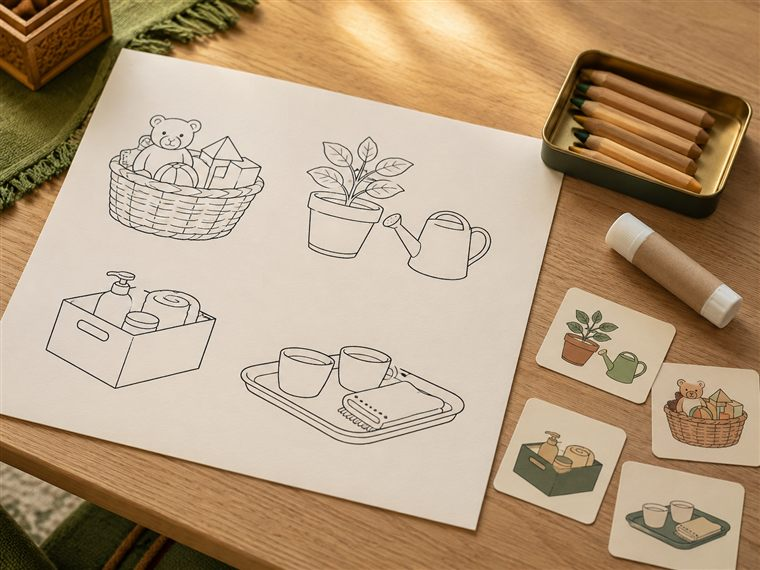
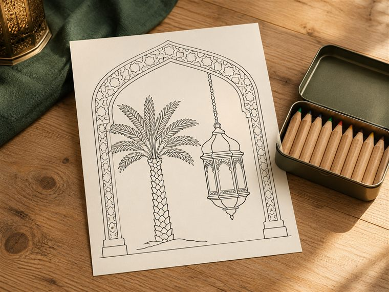
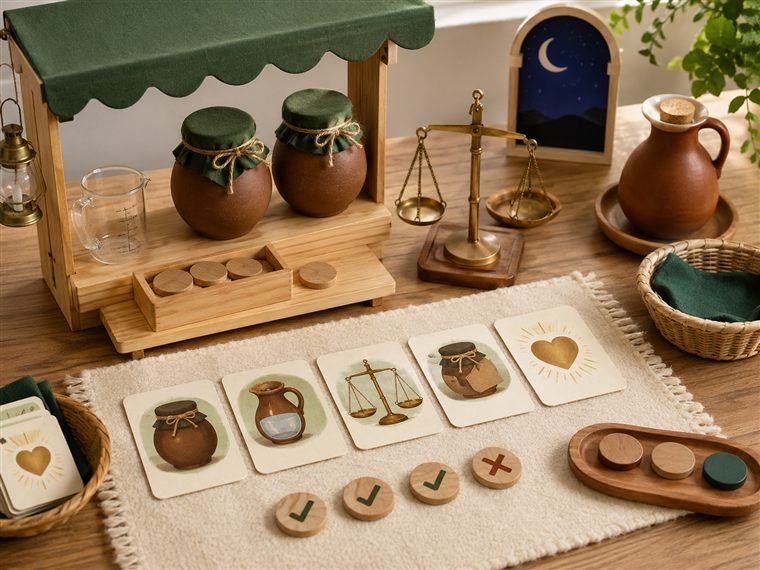
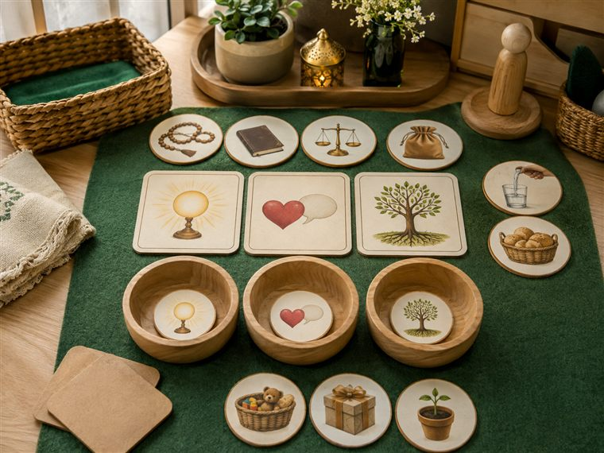

اليوم الخامس · أقتدي بعائلة النبي ﷺ وأصدق
مساحاتُ لعبٍ حرّ. لكثرة الأعداد نفتح ٤ أركانٍ متوازية بمراكز مختلفة؛ وزّعي المجموعات عليها وتتناوب بينها في الفترتين حتى لا تتكدّس. كل ركنٍ لمسةٌ تكاملية مع اللعب تجمع دروس اليوم: عائلة النبي ﷺ (علّمني) · خصال الإيمان الثلاث (قال رسولي) · بائعة اللبن والصدق (أحبك ربي) · الملائكةُ تكتبُ عملي (كتابي · الإنفطار) — تذكيرًا لا تجسيدًا لهيبة الغيب. (عائلةُ النبي ﷺ وبائعةُ اللبن بإجلالٍ بلا تصوير وجوه. أعمار ٥–٦: تلوين جاهز/قصّ ولصق/أدوار/قصص مصوّرة/ترتيب — بلا كتابةٍ أو رسمٍ حرّ.)

🎨 فنوني · «ألوّنُ بيتَ النبوّة الطاهر»
يلوّن الطفل لوحةً جاهزة لبيتٍ نبويٍّ طاهر بالرموز (مسجدٌ · نخيلٌ · قنديل · بلا وجوه)، ويقصّ بطاقاتِ خصال الإيمان ويلصقها بإجلال؛ اقتداءً بعائلة النبي ﷺ.
🧰 الأدوات: لوحةُ بيت النبوّة الجاهزة للتلوين (رموزٌ بلا وجوه) · بطاقاتُ خصال الإيمان الجاهزة · أقلام تلوين · مقصٌّ ولاصق.
📋 دور المعلمة: تتحدّث عن رحمة النبي ﷺ بأهله بإجلالٍ وبلا تصوير وجوه؛ تعين على التلوين واللصق؛ تُرغِّب في الاقتداء.
🌱 المعنى المركزي: أقتدي بعائلة النبي ﷺ في الرحمة والأدب.
📜 قوانين الركن: أبقى في ركني حتى ينتهي الوقت · أحافظ على أدواته · أتشارك وأنتظر دوري · أُعيد الأدوات مرتّبة.

🏠 المسكن · «أقتدي بعائلة النبي ﷺ»
يمثّل الأطفال بدُمى بلا ملامح مواقفَ الرحمة والتعاون في البيت (مساعدةُ الأهل · لينُ القول · قسمةُ الطعام) اقتداءً بهدي النبي ﷺ في أهله.
🧰 الأدوات: دُمى بيتٍ بلا وجوه · أدواتُ بيتٍ خشبية · بطاقاتُ مواقفَ للاقتداء (بلا تصوير ذواتٍ مقدّسة).
📋 دور المعلمة: تُوزّع أدوار الرحمة والتعاون لعبًا؛ تذكّر بهدي النبي ﷺ مع أهله بإجلالٍ دون تمثيلٍ لذاته الشريفة.
🌱 المعنى المركزي: أرحمُ أهلي وأتعاونُ معهم اقتداءً بالنبي ﷺ.
📜 قوانين الركن: أبقى في ركني حتى ينتهي الوقت · أحافظ على أدواته · أتشارك وأنتظر دوري · أُعيد الأدوات مرتّبة.

📚 المكتبة · «قصّةُ بائعة اللبن — الصدق»
يستمع الطفل ويتصفّح بطاقاتِ صور القصة (قدحُ لبنٍ · نجومُ الليل · بابُ بيتٍ — بلا وجوه)، ويرتّب أحداثها ويردّد «اللهُ يراني وإن لم يرَني الناس».
🧰 الأدوات: كتابٌ/بطاقاتُ صورِ القصة (رموزٌ بلا وجوه) · بطاقاتُ تسلسلٍ للترتيب · وسائدُ ركن القراءة.
📋 دور المعلمة: تحكي القصةَ بالصورة وتسأل «لماذا لم تغشّ البنتُ؟»؛ تعين على ترتيب الأحداث؛ تُرسّخ الصدقَ ومراقبةَ الله.
🌱 المعنى المركزي: أصدقُ وإن لم يرَني الناسُ؛ فاللهُ يراني ويكفيني.
📜 قوانين الركن: أبقى في ركني حتى ينتهي الوقت · أحافظ على أدواته · أتشارك وأنتظر دوري · أُعيد الأدوات مرتّبة.

🧩 أدرك · «خصالُ الإيمان الثلاث — ترتيبٌ ومطابقة»
يرتّب الطفل بطاقاتِ خصال الإيمان الثلاث ويطابق كلَّ خصلةٍ بصورة موقفها (إكرام الجار · إكرام الضيف · قول الخير أو الصمت)؛ ويفرز مواقفَ الصدق؛ لعبًا بلا كتابة.
🧰 الأدوات: بطاقاتُ الخصال الثلاث المصوّرة · بطاقاتُ مواقفَ للمطابقة · لوحةُ ترتيبٍ وتصنيف.
📋 دور المعلمة: تسمّي الخصلةَ وتربطها بموقفها؛ تعين على الترتيب والمطابقة؛ تُرغّب في الصدق وقول الخير أو الصمت.
🌱 المعنى المركزي: أتخلّقُ بخصال الإيمان: أُكرمُ وأصدقُ وأقولُ خيرًا أو أصمت.
📜 قوانين الركن: أبقى في ركني حتى ينتهي الوقت · أحافظ على أدواته · أتشارك وأنتظر دوري · أُعيد الأدوات مرتّبة.